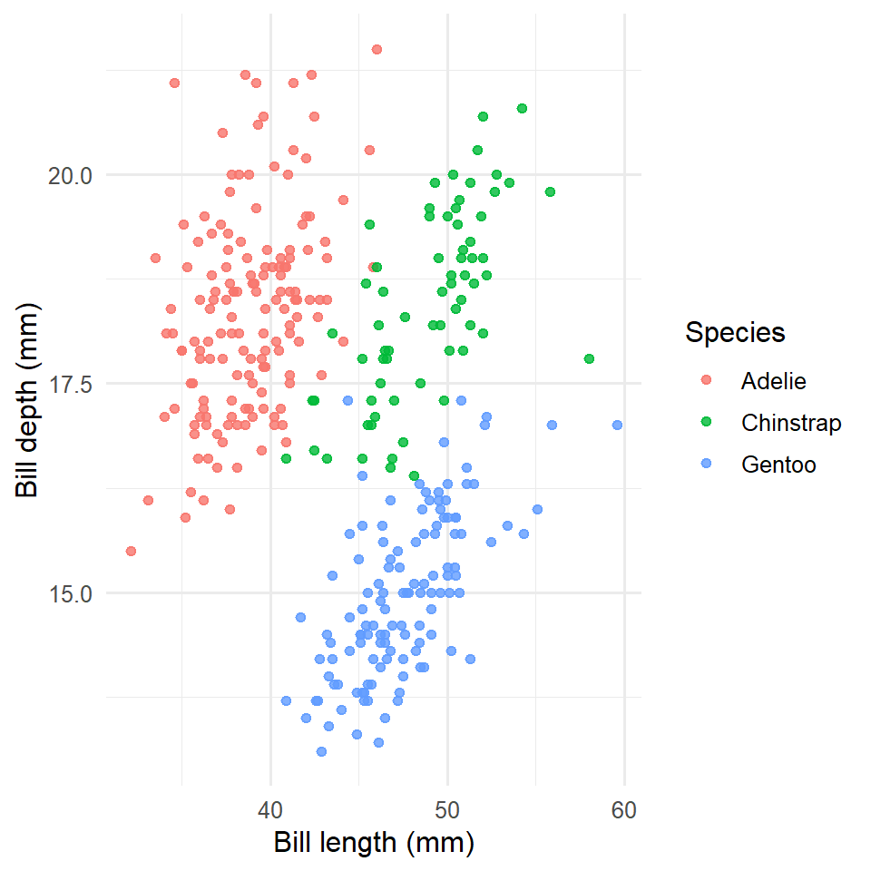

library(dplyr)
library(ggplot2)
library(gt)
library(ggokabeito) # color-blind-safe (Okabe-Ito) scale
data(penguins)
penguins <- penguins |> filter(!is.na(bill_len), !is.na(bill_dep))Bill dimensions across Antarctic penguin species
The data
We measured 342 penguins of 3 species (Adelie, Chinstrap, and Gentoo), collected at Palmer Station, Antarctica. The data are available through the palmerpenguins package and are now also included in base R’s datasets package.
The species are not evenly represented:
penguins |>
count(species, name = "n") |>
knitr::kable()| species | n |
|---|---|
| Adelie | 151 |
| Chinstrap | 68 |
| Gentoo | 123 |
Bill shape separates the species
Within a species the bill has a characteristic shape, so the species form clusters.
ggplot(penguins, aes(bill_len, bill_dep, color = species)) +
geom_point(alpha = 0.8) +
labs(x = "Bill length (mm)", y = "Bill depth (mm)", color = "Species") +
theme_minimal(base_size = 12)
Mean measurements
penguins |>
summarise(
n = n(),
bill_len = mean(bill_len),
bill_dep = mean(bill_dep),
body_mass = mean(body_mass, na.rm = TRUE),
.by = species
) |>
gt() |>
cols_label(species = "Species", n = "N", bill_len = "Bill length (mm)",
bill_dep = "Bill depth (mm)", body_mass = "Body mass (g)") |>
fmt_number(columns = c(bill_len, bill_dep), decimals = 1) |>
fmt_number(columns = body_mass, decimals = 0)| Species | N | Bill length (mm) | Bill depth (mm) | Body mass (g) |
|---|---|---|---|---|
| Adelie | 151 | 38.8 | 18.3 | 3,701 |
| Gentoo | 123 | 47.5 | 15.0 | 5,076 |
| Chinstrap | 68 | 48.8 | 18.4 | 3,733 |
Session
Session info
sessionInfo()R version 4.6.1 (2026-06-24 ucrt)
Platform: x86_64-w64-mingw32/x64
Running under: Windows 11 x64 (build 26200)
Matrix products: default
LAPACK version 3.12.1
locale:
[1] C
system code page: 65001
time zone: Europe/Paris
tzcode source: internal
attached base packages:
[1] stats graphics grDevices datasets utils methods base
other attached packages:
[1] ggokabeito_0.1.0 gt_1.3.0 ggplot2_4.0.3 dplyr_1.2.1
loaded via a namespace (and not attached):
[1] vctrs_0.7.3 cli_3.6.6 knitr_1.51 rlang_1.3.0
[5] xfun_0.59 renv_1.2.3 generics_0.1.4 S7_0.2.2
[9] jsonlite_2.0.0 labeling_0.4.3 glue_1.8.1 htmltools_0.5.9
[13] sass_0.4.10 scales_1.4.0 rmarkdown_2.31 grid_4.6.1
[17] evaluate_1.0.5 tibble_3.3.1 fastmap_1.2.0 yaml_2.3.12
[21] lifecycle_1.0.5 compiler_4.6.1 fs_2.1.0 RColorBrewer_1.1-3
[25] htmlwidgets_1.6.4 pkgconfig_2.0.3 farver_2.1.2 digest_0.6.39
[29] R6_2.6.1 tidyselect_1.2.1 pillar_1.11.1 magrittr_2.0.5
[33] withr_3.0.3 tools_4.6.1 gtable_0.3.6 xml2_1.6.0